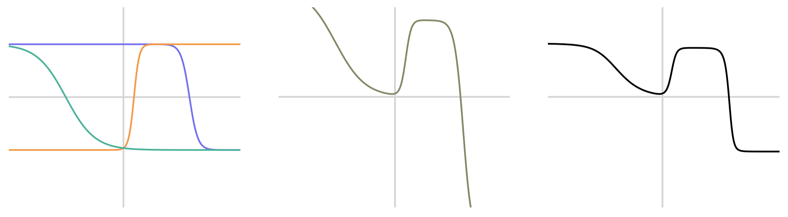
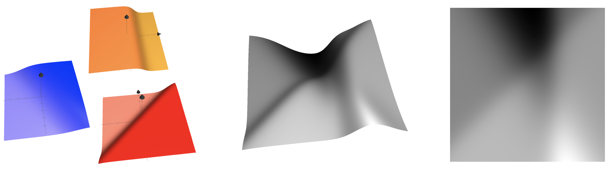
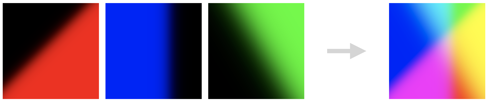
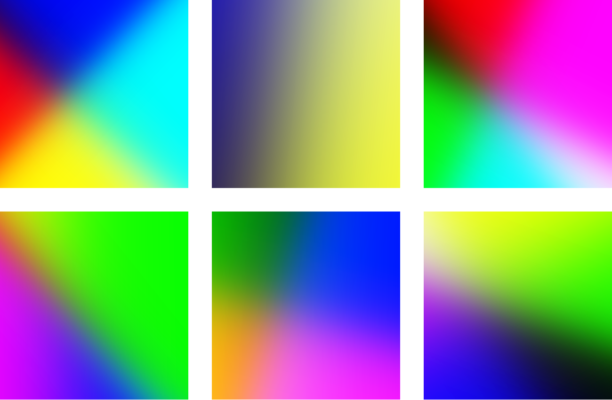
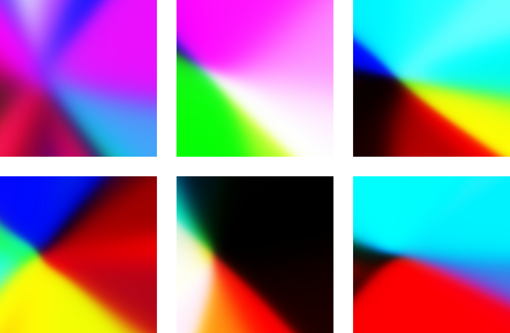
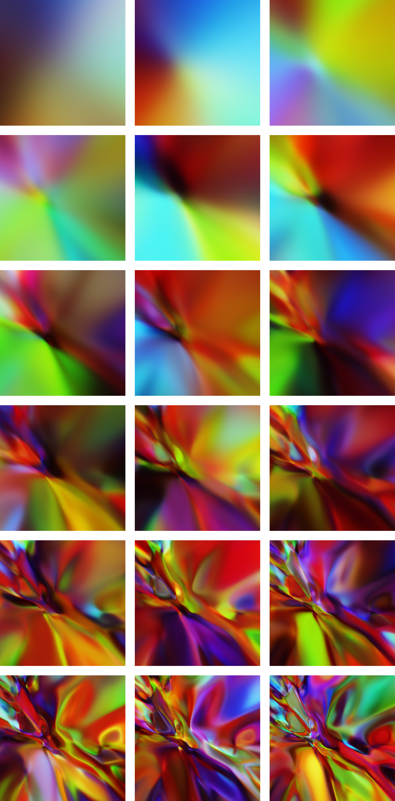
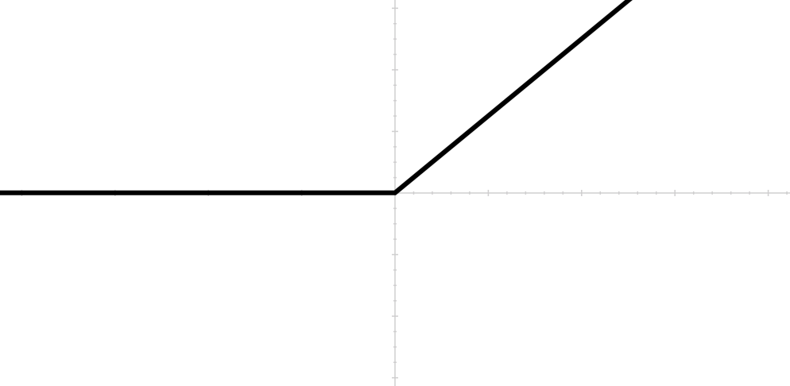
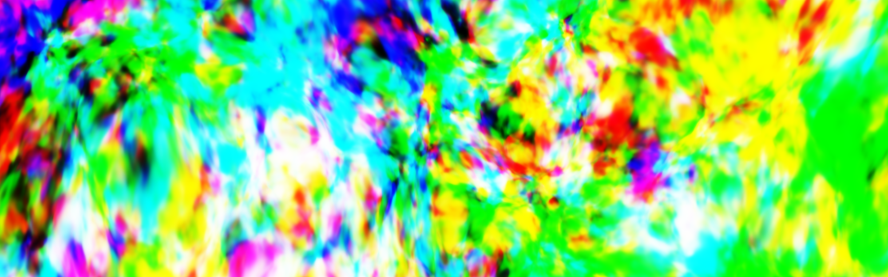
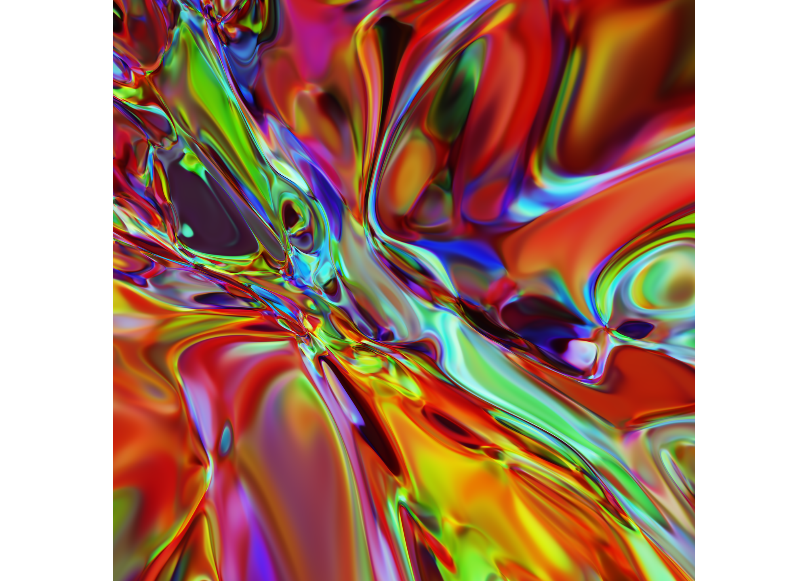
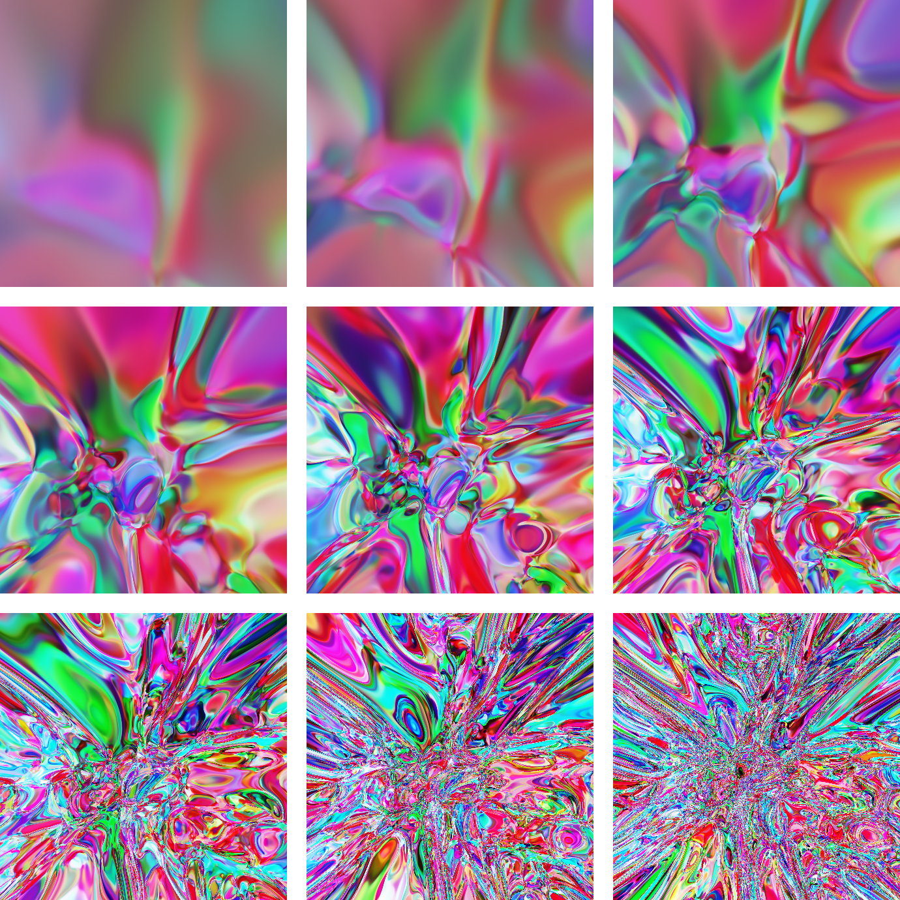

This article is an illustrated tour of neural networks in their primordial, untrained state. Neural networks are notoriously difficult beasts to understand. My aim is to provide a peek into the inherent beauty of this challenging world, and to build your intuition for how to set up neural networks through informed hyperparameter choices. I assume that you know neural networks are tools for machine learning, and that you have a little bit of a coding and math background, but I’ll try to keep things friendly.
A random neural network looks like this:
Figure 1: The graph of a random feedforward neural network.

Why not be even more ambitious and throw in a few more dimensions? Here’s an animated cross-sectional view of another random network:
Figure 2: The 7-dimensional graph of a random feedforward neural network.
[If this animation isn't working for you, try the animated gif instead.]
These are graphs of a specific type of model called a feedforward neural network, also known as a multilayer perceptron. In this article, I’ll explain how this kind of network is built out of simpler mathematical pieces. I’ll also visually show how many of the hyperparameter values for these models affect their behavior. Hyperparameters are values like the number of layers, layer size, and the probability distribution used to set the initial weights.
Figure 1 above is based on a mathematical function that computes a color for every pixel. This function accepts two inputs, which are the \(x\) and \(y\) coordinates for a pixel, and provides three outputs, which are the red, green, and blue intensities for that pixel. If I were to define such a function in Python, it would look like this:
def neural_net(x, y):
# Compute r, g, and b using x and y.
return r, g, bA critical property of neural networks is that they are parametrizable through weight values you can adjust. Mathematically, we could choose to think of a neural network as a function \(f(x, w)\) where both \(x\) and \(w\) are vectors. From this perspective, \(w\) are the weights that are learned during training from a fixed set of data. Once training is complete, the vector \(w\) remains fixed, while the function receives previously-unseen input values for \(x,\) and we think of the \(x\) values as the data from which we predict the desired output.
Feedforward neural networks have a particular form. They’re built with weight matrices \(W_1, W_2, \ldots,\) bias vectors \(b_1, b_2, \ldots,\) and functions \(a_1(), a_2(), \ldots.\) A three-layer feedforward network is built like so:
\[\begin{cases} y_0 = x \\ y_1 = a_1(W_1 y_0 + b_1) \\ y_2 = a_2(W_2 y_1 + b_2) \\ y_3 = a_3(W_3 y_2 + b_3) \\ f(x, w) = y_3 \\ \end{cases} \qquad(1)\]
The functions \(a_i()\) are called activation functions. In practice, activation functions are very often chosen to be \(\tanh(x),\) \(\max(0, x),\) or variations on these.
1 A Single Layer
Let’s take a look at a simple instance, and build our way up to the more sophisticated picture. Consider a single-layer model with matrix \(W_1\) having weights given by \(w_{11} = 0.4\) and \(w_{12} = 1.0,\) bias term \(b_1=-0.3,\) and the sigmoid activation function:
\[\sigma(x) = \frac{1}{1 + e^{-x}}.\qquad(2)\]
Given inputs \(x_1\) and \(x_2,\) we can summarize the entire neural network as a relatively simple function:
\[f(x) = a_1(W_1x + b_1) = \frac{1}{1+e^{-0.4x_1-x_2+0.3}}.\qquad(3)\]
We can visualize this function as a 3D height plot, shown below in figure 3. Since the output values are constrained to the [0, 1] interval by the sigmoid function, we can also render the same plot as a pixel intensity image — basically a bird’s eye view in which values close to 1 appear white, values close to 0 appear black, and values between provide a gradient of grays.
Figure 3: On the left is the sigmoid function \(\sigma(x)\) defined by (2). In the middle is a 3D heightmap of the single-layer, one-output neural network defined by (3). On the right is the overhead view of this same function.

Here we see a single output value because our weight matrix \(W_1\) had a single row. A layer can have multiple outputs, corresponding to multiple rows in its weight matrix, and a correspondingly sized bias vector (eg, \(W_1\) and \(b_1\)). Before the activation function is applied, each output can be seen as either a flat hyperplane (viewed as a heightmap) or as a linear color gradient (viewed as pixel intensities). After the activation, the output surface becomes nonlinear. If the activation function is \(\sigma(x)\) or \(\tanh(x)\), then the outputs are mapped into a bounded interval; you might say that the hyperplanes have been flattened so that the ends become level, and there is a section of curvature in the middle.
2 The Second Layer
Let’s dig a bit deeper into the rabbit hole and see what the next layer can do.
We’ll start by building up to figure 4 below, which shows how a 2-layer network might behave when it has only a single (1-dimensional) input and a single (also 1-dimensional) output. Our example network uses the \(\tanh()\) activation function. The output of the first layer is a series of similarly-shaped curves at different scales and locations (curves like this are often called s-curves); these are at left in the figure below. If we add together scaled version of these (in other words, if we take a linear combination of these), then we get a curve that, in a sense, has access to as many inflection points (intuitively, “turning points”) as it has inputs. An example is in the middle of the figure below. The final output of the second layer is the result of applying the activation function to this linear combination. The right-hand image in the figure shows \(\tanh()\) applied to the curve shown in the middle of the figure.
Figure 4: A visual explanation of a simple 2-layer neural network. This network has a 1-dimensional input and a 1-dimensional output. Left: three different color-coded \(\tanh()\) curves, each with its own weight and bias term. Middle: A linear combination of those three curves. Right: \(\tanh()\) applied to the curve in the middle.
If we have more than a single input variable, then the outputs of the first layer look like those in figure 3 (for a \(\tanh()\) or \(\sigma()\) activation function), and the linear combinations of these can be more interesting since the inflection points turn into inflection lines (or hyperplanes in higher dimensions). The figure below is analogous to figure 4 just above; the change is that we now have two input variables instead of one.
Figure 5: Each of the three sigmoid-based surfaces on the left is a single output value of the first layer of a neural network. The middle surface is a linear combination of these three values. The right image is an overhead view of the middle plot.
If we have three different output values in the range [0, 1], then we can visualize all three at once by interpreting them as independent red, green, and blue channels, like so:
Figure 6: We can simultaneously render three different 2D plots by rending then as red, green, and blue intensities, respectively. This is an example using simple sigmoid curves.
The original figures in this article (figure 1 and figure 2) use this technique to render all three output values of a neural network in a single image.
To wrap up, here are typical one-layer networks:
Figure 7: Several example one-layer networks.
Below are typical two-layer networks. Each of the following networks has 10 hidden units in its first layer.
Figure 8: Several example two-layer networks.
The weights in all of those have been randomly chosen, and I’ll mention the probability distribution used for them in a few moments.
3 The Deep Part of Deep Learning
This section visualizes how networks change as we add more layers to them.
The word deep in deep learning refers to the fact that many of today’s more sophisticated neural networks tend to have many layers. Building on our progression from 1- to 2-layer networks, what do networks with 3 or more layers look like?
Here’s a progression:
Figure 9: Each column shows networks with the same number of layers. Images in the left column have 1 layer each; those in the right column have 10 layers. Within each row, the images show the output of successive layers of the same network. In other words, each image is a single layer added to the image to its left.

In the figure above, each row shows the output of successive layers of a feedforward neural network with random weights. The images in the first column are from the first layer; those in the second column are from the second layer; and so on. To phrase things intuitively, I’d say that deeper networks can capture a greater level of complexity in terms of behavior.
Just for kicks, below is a deep dive on a single network. The final image consists of 18 layers. The hidden layers have 30 units each; in the language of definition (1), this means that each intermediate \(y_i\) vector has 30 coordinates.
Figure 10: A focused look at one particular neural network. Read the images from left to right, then top to bottom. The top-left image shows outputs from the first layer alone. The bottom-right image shows outputs from the final, 18th layer.
Here’s a close-up of the above network extended to 27 layers:
Figure 11: The network from figure 10 with 27 layers.
In terms of human-appreciable beauty, these graphs become fairly complex as we keep adding more layers. Here’s a glimpse of the same network extended to 40 layers:
Figure 12: The network from figure 10 extended to 40 layers.

4 Activation Functions
So far we’ve looked at two sigmoidal activation functions: \(\sigma()\) and \(\tanh().\) Another popular choice is \(\text{relu}(x) = \max(x, 0).\)
Figure 13: The function \(\text{relu}(x) = \max(x, 0).\)
In machine learning folklore, it is said that relu-based networks train more quickly than the sigmoidals. This may be true because, for positive \(x\) values, \(\text{relu}(x)\) has a derivative far from zero, whereas both \(\tanh()\) and \(\sigma()\) have small derivatives for large \(x\) values. Functions with small derivatives result in slower convergence via gradient descent, making \(\text{relu}()\) the better choice from this perspective.
An interesting observation made by Ian Goodfellow (and perhaps by others before him) is that relu-based networks are piecewise linear functions, which means that we can partition the input space into distinct regions such that the network is a purely linear function in each region (Goodfellow 2017). In the pixel-intensity visualization, this translates to an image that is entirely a patchwork of linear gradients.
Let’s take a look at relu-based networks of varying depths. For comparison, the top row in the next figure is a \(\tanh()-\)based network, similar to the networks above. The bottom row uses the \(\text{relu}()\) activation function. Both networks use \(\sigma()\) on their final layer in order to constrain the output values to the [0, 1] range.
Figure 14: Each row depicts a neural network at increasing depths. From left to right, each image has five more layers than the previous one. The top row uses tanh() activation functions; the bottom uses relu().

5 Neurons Per Layer
In a layer like this:
\[y_3 = \tanh(W_3 y_2 + b_3),\]
the size (number of coordinates) of \(y_3\) is referred to as either the number of units in the layer, the number of neurons in the layer, or simply the size of the layer. These are all synonyms.
As the size of a layer increases, it’s capable of learning more features for the next layer to utilize. Both layer size and network depth (number of layers) are hyperparameters that can increase the complexity of the network. In figure 10, we saw a progression of a single network as its depth increased. Analogously, let’s take a look at a network as its layer size increases, from 10 neurons per layer up through 400 neurons per layer:
Figure 15: Random neural networks with increasing layer sizes. Each network has exactly 14 layers. From left to right, top to bottom, the networks have 10, 20, 40, 80, 120, and 400 neurons per layer, respectively.

The final image above, with 400 neurons per layer, looks a bit like exploding static at this scale, which is the \(x, y\) square \([-1, 1]^2.\) Here’s a 30x zoom of this same network to show that it is indeed a continuous function, if a rather motley one:
Figure 16: A 30x zoom of the 400-neurons-per-layer network in the lower-right corner of figure 15.
Comparing figure 10 (the effect of adding layers) to figure 15 (the effect of adding neurons per layer), I’d say that adding more layers to a network enables more complex localized behavior, whereas adding more neurons per layer enables more detailed information throughout the entire model. What I’m trying to capture is the difference between the uniformly splotchy texture of the 400-neurons-per-layer network in figure 15 versus the variety of both complex and relatively smooth regions that are present in the deep (40-layer) network in figure 12.
6 Input Scale
It’s generally a good idea to scale your data so that it’s zero-centered and something close to normalized, such as having a standard deviation of 1. If we zoom into or out of a random neural network, we can get a sense for why this is useful. Let’s revisit my favorite random network from this article, the one from figure 11. Here is that same network as seen in the \([-2.6, 2.6]^2\) square in the \(x, y-\)plane:
Figure 17: For convenience, the same network we saw earlier in figure 11.
Next is a series of images starting with a wide view of the \([-40, 40]^2\) square in the upper-left. Each subsequent image is at about twice the zoom level of the previous. The middle image is at about the same scale as the figure above.
Figure 18: The network from figure 17 shown at a number of different scales. The top-left image shows the square \([-40, 40]^2\) in the \(x,y-\)plane. Each subsequent image, read left to right, top to bottom, is at about twice the detail (so the second images shows the square \([-20, 20]^2\)). The center of each image is the point \((0, 0).\)
![Figure 18: The network from figure 17 shown at a number of different scales. The top-left image shows the square [-40, 40]^2 in the x,y-plane. Each subsequent image, read left to right, top to bottom, is at about twice the detail (so the second images shows the square [-20, 20]^2). The center of each image is the point (0, 0).](images/fig18@2x.png)
If input data to our network extended over a wide numerical range, or if it were far from zero-centered, then the top-left image above would be the most relevant, and we can see that the behavior of the network is essentially radial (meaning that it forms a star-like pattern where the distance from center is not an important parameter); in other words, the image appears to be constrained to a certain kind of behavior that may not fit the data.
On the other hand, the bottom-right image is also less than ideal because it presents a relatively smooth, low-detail surface that’s likely to make training slower than it could be given stronger network gradients.
(The next paragraph is slightly mathy — you can skip it if you’re not here for proofs.)
There is a way to see why a zoomed-out random network has a radial pattern. As observed above, relu-based networks are truly piecewise linear, and in fact tanh()-based networks (like those in figure 18) are very close to piecewise linear in the sense that tanh() can be closely approximated with a very small number of linear pieces (I learned this from Ian Goodfellow (Goodfellow 2017)). From this perspective, the domain of each individual layer can be partitioned into convex regions on which the layer, as a function, is linear. The composition (that is, the application of layer after layer) of these functions maintains this property: the domain of multiple layers can still be partitioned into convex regions of linearity. Moreover, there are only ever finitely-many such regions. So the overall network domain, as a partition of linear-behavior regions, has finitely many convex pieces. Thus the pieces that are unbounded must necessarily form a star-like, or radial pattern similar to that of the top-left image in figure 18.
7 Scale of Random Weights
The last hyperparameter I’ll visualize for you is the scale of the random weights. There are different methods of choosing random weights, such as using a Gaussian distribution or a uniform distribution. For simplicity, all the networks in this article use uniformly random weights, although in practice normals are also great.
The image grid below shows random networks with increasing random weight scales from left to right, top to bottom. All the other hyperparameters (such as number of layers and layer size) are held constant. Each network has 27 layers and 30 neurons each. The top-left network has random weights in the range [-0.5, 0.5]; the bottom-right network uses the range [-1, 1].
Figure 19: Each image shows essentially the same network, except that the scale of the random weights increases geometrically from the range [-0.5, 0.5] at the top left to [-1.0, 1.0] at the bottom right.
Although the high-weight-scale images in the bottom row may look interesting, they’re not ideal for training because they are starting with an assumption that the data exhibits highly complex behavior. Any actual patterns in the data are likely to be far from this rather specific and arbitrary starting point.
Below is an animation of the same network evolution shown in the image grid above. This animation provides a stronger sense of the infusion of detail as the weights scale up from the range \([-0.4, 0.4]\) at the start of the animation to \([-0.8, 0.8]\) at the end.
Figure 20: The network from figure 19 with weights gradually scaled up from the range [-0.4, 0.4] to the range [-0.8, 0.8].
![Figure 20: The network from figure 19 with weights gradually scaled up from the range [-0.4, 0.4] to the range [-0.8, 0.8].](images/weight_scale.gif)
7.1 Some Math Behind Random Weights
There are some useful techniques for choosing your initial random weights such as He or Glorot (aka Xavier) initialization that make it easier to find the sweet spot on this spectrum (He et al. 2015), (Glorot and Bengio 2010). These methods use expressions like \(1/\sqrt{n},\) where \(n\) is the number of inputs to a layer. I’ll provide a quick bit of intuition as to why that particular expression is a useful barometer for the scale of your random weights.
Let’s build this intuition by looking at a single layer without a bias term or an activation function. These simplifications mean that we would have to do more follow-up work to achieve a fully justified approach, but this brief line of thinking will show you the kind of thought behind choosing a good initialization scale. Our simplified layer is a straightforward matrix multiplication:
\[y = Wx.\]
Suppose each term \(w_{ij}\) in matrix \(W\) is chosen independently with mean 0 and standard deviation \(\sigma.\) Since the full network can have many layers, one of the key dangers is that the outputs of subsequent layers may either explode (each layer’s output is significantly larger than the previous output) or vanish (each layer’s output is significantly smaller than the previous). Mathematically, we can fight back by encouraging the output of a layer to have a similar scale to its input. In other words, we would like to encourage something like this:
\[\|y\| \approx \|x\|.\qquad(4)\]
If you’re familiar with expected values and variances, then we can use those ideas to calculate the expected value of \(\|y\|^2\) relative to the value of \(\|x\|^2:\)
\[E\big[\|y\|^2\big] = \sum_i E\big[y_i^2\big] = \sum_i \text{Var}[y_i]\]
\[ = \sum_{i,\,j} \text{Var}[w_{ij}x_j] = \sum_{i,\,j} x_j^2\text{Var}[w_{ij}]\]
\[ = \sum_{i,\,j} x_j^2\sigma^2 = n\sigma^2\|x\|^2.\]
In other words, \(E\big[\|y\|^2\big] = n\sigma^2 \|x\|^2.\) Since we can choose the standard deviation of our weights \(\sigma,\) we can set
\[\sigma = \frac{1}{\sqrt{n}},\]
and we’ll arrive at \(E\big[\|y\|^2\big] = \|x\|^2,\) which nicely matches our original goal (4). This is not the exact reasoning used to justify He or Glorot initialization, but it does provide a first look at how the weight scales affect the global behavior of the network as a whole.
Hi! I hope you enjoyed my article. As you can see, I love machine learning. If you’d like to work together on a machine learning project, I’d love to hear from you. My company, Unbox Research, has a small team of talented ML engineers. We specialize in helping content platforms make more intelligent use of their data, which translates to algorithmic text and image comprehension as well as driving user engagement through discovery or personalization. I’m tyler@unboxresearch.com.
(I’m also teaching a course on TensorFlow in New York in Jan 2019! Register here.)
8 Notes on the Images
If you like the images in this article, I encourage you to render and play with them for yourself — they’re surprisingly delightful. As I experimented, I felt as if I was exploring a new world. This section explains how I created them.
8.1 Figures Created with Python
All of the neural network images after figure 2, excluding the heightmaps, were created with this Jupyter notebook.
8.2 Figures Created with Grapher
The line graphs and 3D heightmap graphs were generated with Grapher. The corresponding Grapher files can be found in this directory on GitHub.
8.3 Figures Created with Shadertoy
Figure 1 is a screenshot of a WebGL-renderable random neural network with the live-editable code at this Shadertoy page.
There are two versions of figure 2 because I don’t think all browsers correctly display the live-rendered version, which uses WebGL. You can experiment with the live-rendered version in real time at this Shadertoy page. The animated gif uses different parameters that you can find at this other Shadertoy page.
References
Glorot, Xavier, and Yoshua Bengio. 2010. “Understanding the Difficulty of Training Deep Feedforward Neural Networks.” In Proceedings of the Thirteenth International Conference on Artificial Intelligence and Statistics, 249–56.
Goodfellow, Ian. 2017. “Adversarial Examples and Adversarial Training (Stanford Cs231n, Lecture 16).” YouTube. https://www.youtube.com/watch?v=CIfsB_EYsVI#t=16m32s.
He, Kaiming, Xiangyu Zhang, Shaoqing Ren, and Jian Sun. 2015. “Delving Deep into Rectifiers: Surpassing Human-Level Performance on Imagenet Classification.” In Proceedings of the Ieee International Conference on Computer Vision, 1026–34.